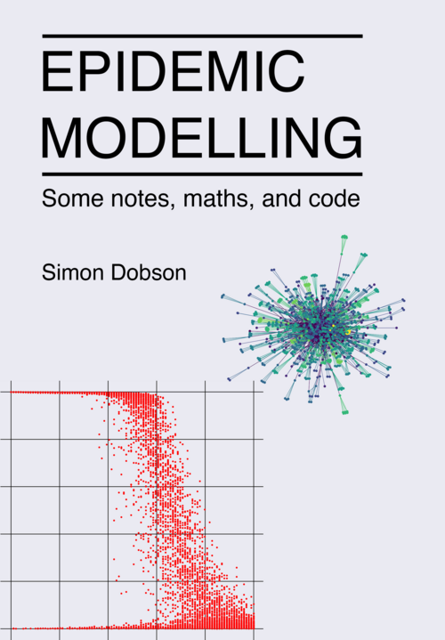

The 2020 covid-19 pandemic made it clear how much we depend on a public understanding of science. Without public confidence it's impossible to follow and maintain the sorts of strategies we need to keep us all safe in the face of a new and poorly-understood disease.
Science is based on models that we construct to help us to better understand the world. This is especially true for epidemic diseases, where we want to know the effects of different sorts of transmission, different control strategies, and so forth.
But what is a model of disease? How are they built, and what questions can we ask of them? This book tries to explain network-based epidemic modelling through a unique combination of accessible text, introductory mathematics, and all the Python code needed to perform computational experiments that explore different disease models and countermeasures
The book is now available in its first edition. I've also written an article about the process of self-publishing for anyone who has a similar ambition.